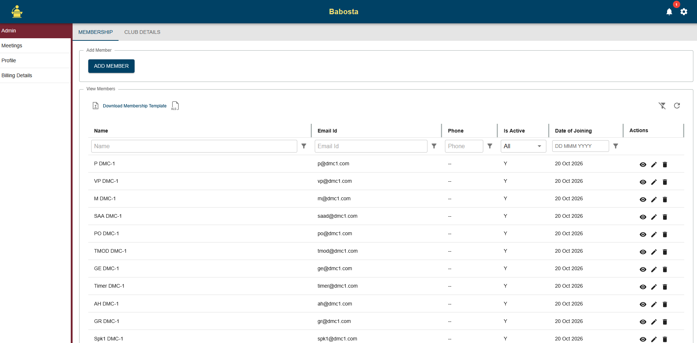
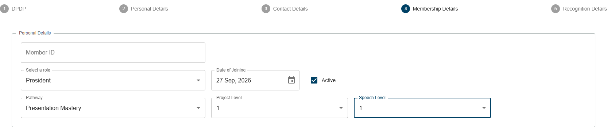
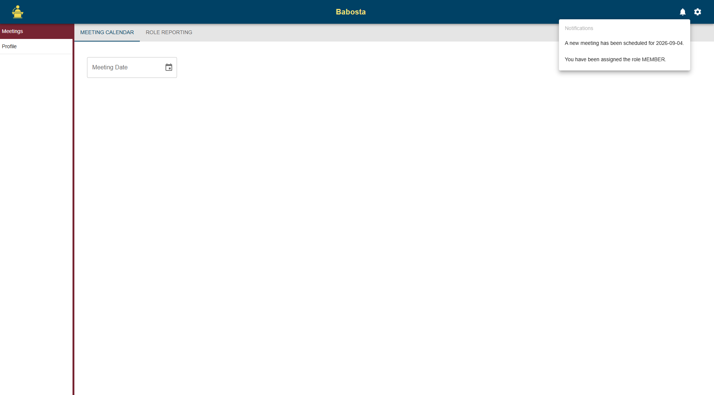
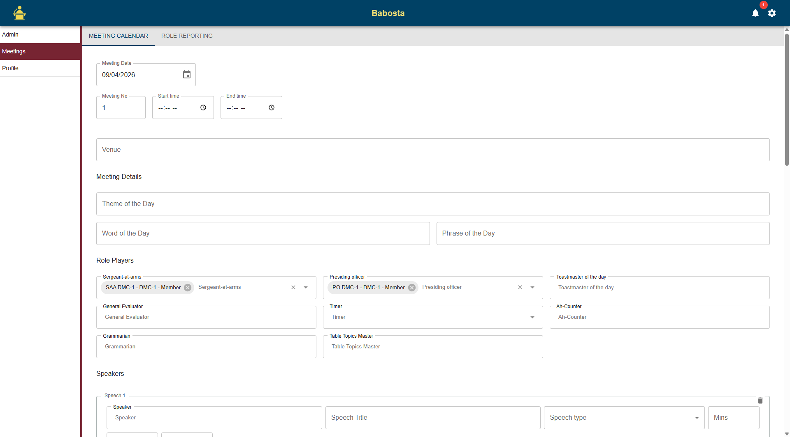
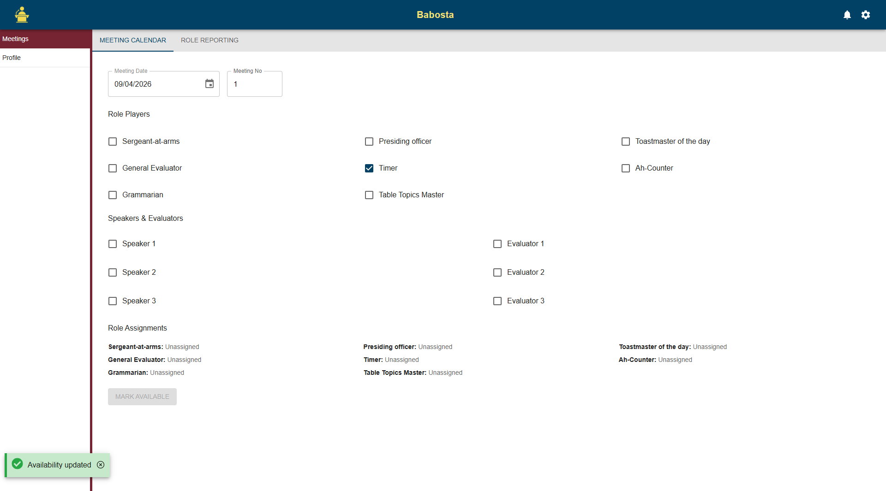
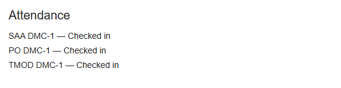

Kar Technologies
Kar Technologies
Solutions for connected business workflows
Kar Technologies builds enterprise software around the people, information, and recurring processes that keep organizations moving. Explore examples of membership management and meeting coordination, then read how the same workflow-led principles apply to broader enterprise systems.
Babosta
Membership management and meeting rosters
Babosta brings member administration and meeting coordination into a shared experience. Browse examples of member records, role assignments, availability, notifications, and attendance using the controls below.






Screen 1 of 6
User management and access
The supplied admin screen shows a member directory with search and filters for member details, active status, and joining date, plus row-level actions. A separate guided setup flow captures a member ID, assigned role, join date, status, development pathway, and project or speech progress.
Together, these screens illustrate a structured way to find and maintain member records, manage membership status, and connect profiles to the roles and participation workflows they support. The setup sequence also gathers consent, personal and contact details, membership information, and recognition details.
Notifications and scheduled jobs
The meeting example includes notifications for events such as a new meeting or a role assignment. Event-based alerts help members notice updates that need attention and give them a route back to the relevant information.
Scheduled jobs, often called cron jobs, run recurring tasks at configured times. Depending on the system requirements, these jobs can automate reminders, routine status updates, or recurring report preparation. Their schedule and behavior should be configured around the organization's operating rules.
Meeting rosters and coordination
Meeting coordination can bring the date and details, roster, role assignments, availability, notifications, and attendance into one connected process. Organizers can see which roles are assigned or still open, while members can review responsibilities and indicate availability.
After the meeting, an attendance list can record participant check-in. Keeping planning and attendance information together makes it easier to follow the meeting from preparation through completion.
ERP systems and operational workflows
Enterprise resource planning systems connect business information and processes across an organization. A workflow-led ERP solution can make responsibilities, handoffs, and process status easier to follow across teams, while keeping related operational information together.
ERP modules, integrations, and industry coverage vary by product and customer requirements. Kar will describe those capabilities as they are confirmed rather than imply that every implementation includes the same functions.